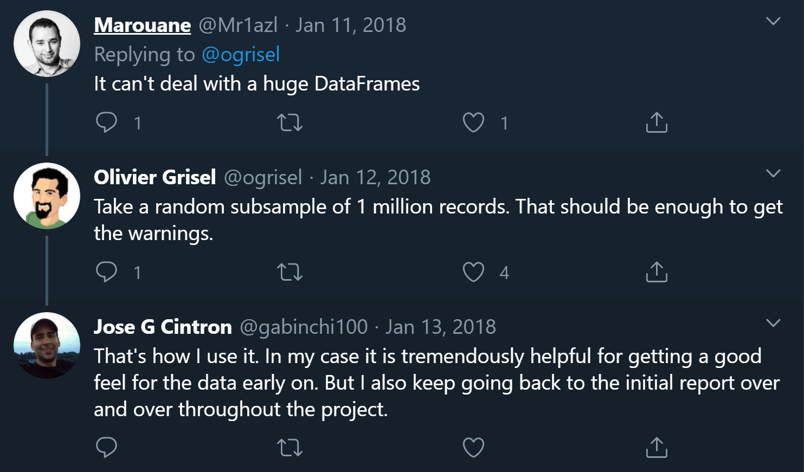

Profiling large datasets
By default, pandas-profiling comprehensively summarizes the input dataset in a way that gives the most insights for data analysis. For small datasets, these computations can be performed in quasi real-time. For larger datasets, deciding upfront which calculations to make might be required.
Whether a computation scales to a large datasets not only depends on the exact size of the detaset, but also on its complexity and on whether fast computations are available. If the computation time of the profiling becomes a bottleneck, pandas-profiling offers several alternatives to overcome it.
Minimal mode
pandas-profiling includes a minimal configuration file where the most expensive computations are turned off by default.
This is the recommended starting point for larger datasets.
profile = ProfileReport(large_dataset, minimal=True)
profile.to_file("output.html")
(minimal mode was introduced in version v2.4.0)
This configuration file can be found here: config_minimal.yaml. More details on settings and configuration are available in Available settings.
Sample the dataset
An alternative way to handle really large datasets is to use a portion of it to generate the profiling report. Several users report this is a good way to scale back the computation time while maintaining representativity.
# Sample 10.000 rows
sample = large_dataset.sample(10000)
profile = ProfileReport(sample, minimal=True)
profile.to_file("output.html")
The reader of the report might want to know that the profile is generated using a sample from the data. This can be done by adding a description to the report (see Dataset metadata and data dictionaries for details).
description = "Disclaimer: this profiling report was generated using a sample of 5% of the original dataset."
sample = large_dataset.sample(frac=0.05)
profile = sample.profile_report(dataset={"description": description}, minimal=True)
profile.to_file("output.html")
Disable expensive computations
To decrease the computational burden in particularly large datasets but still maintain some information of interest that may stem from them, some computations can be filtered only for certain columns. Particularly, a list of targets can be provided to Interactions, so that only the interactions with these variables in specific are computed.
from pandas_profiling import ProfileReport
import pandas as pd
# Reading the data
data = pd.read_csv(
"https://raw.githubusercontent.com/datasciencedojo/datasets/master/titanic.csv"
)
# Creating the profile without specifying the data source, to allow editing the configuration
profile = ProfileReport()
profile.config.interactions.targets = ["Name", "Sex", "Age"]
# Assigning a DataFrame and exporting to a file, triggering computation
profile.df = data
profile.to_file("report.html")
The setting controlling this, ìnteractions.targets, can be changed via multiple interfaces (configuration files or environment variables). For details, see Changing settings.
Concurrency
pandas-profiling is a project under active development. One of the highly desired features is the addition of a scalable backend such as Modin, Spark or Dask.
Keep an eye on the GitHub page to follow the updates on the implementation of a concurrent and highly scalable backend. Specifically, development of a Spark backend is currently underway.